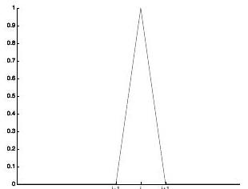

Deep neural network functions¶
from IPython.display import IFrame
IFrame(src= "https://cdnapisec.kaltura.com/p/2356971/sp/235697100/embedIframeJs/uiconf_id/41416911/partner_id/2356971?iframeembed=true&playerId=kaltura_player&entry_id=1_1x52r7v2&flashvars[streamerType]=auto&flashvars[localizationCode]=en&flashvars[leadWithHTML5]=true&flashvars[sideBarContainer.plugin]=true&flashvars[sideBarContainer.position]=left&flashvars[sideBarContainer.clickToClose]=true&flashvars[chapters.plugin]=true&flashvars[chapters.layout]=vertical&flashvars[chapters.thumbnailRotator]=false&flashvars[streamSelector.plugin]=true&flashvars[EmbedPlayer.SpinnerTarget]=videoHolder&flashvars[dualScreen.plugin]=true&flashvars[hotspots.plugin]=1&flashvars[Kaltura.addCrossoriginToIframe]=true&&wid=1_3eff9dla" ,width='800', height='500')
IFrame(src="https://cdnapisec.kaltura.com/p/2356971/sp/235697100/embedIframeJs/uiconf_id/41416911/partner_id/2356971?iframeembed=true&playerId=kaltura_player&entry_id=1_wwt0aak3&flashvars[streamerType]=auto&flashvars[localizationCode]=en&flashvars[leadWithHTML5]=true&flashvars[sideBarContainer.plugin]=true&flashvars[sideBarContainer.position]=left&flashvars[sideBarContainer.clickToClose]=true&flashvars[chapters.plugin]=true&flashvars[chapters.layout]=vertical&flashvars[chapters.thumbnailRotator]=false&flashvars[streamSelector.plugin]=true&flashvars[EmbedPlayer.SpinnerTarget]=videoHolder&flashvars[dualScreen.plugin]=true&flashvars[hotspots.plugin]=1&flashvars[Kaltura.addCrossoriginToIframe]=true&&wid=1_u1s5u1jt",width='800', height='500')
FEM and DNN¶
Motivation: from finite element to neural network¶
In this chapter, we will introduce the so-called shallow neural network (deep neural network with one hidden layer) from the viewpoint of finite element method.
Let us first consider the linear finite element functions on the unit interval \(\bar{\Omega}=\) \([0,1]\) in \(1 \mathrm{D}\). We then consider a set of equidistant girds \(\Omega_{\ell}\) of level \(\ell\) on the unit interval \(\bar{\Omega}=[0,1]\) and mesh length \(h_{\ell}=2^{-\ell}\). The grid points \(x_{\ell, i}\) are given by $\(x_{\ell, i}:=i h_{\ell}, \quad 0 \leq i \leq 2^{\ell} .\)\( For \)\ell=1\(, we denote the special hat function: \)\(\varphi(x)= \begin{cases}2 x & x \in\left[0, \frac{1}{2}\right] \\ 2(1-x) & x \in\left[\frac{1}{2}, 1\right] \\ 0, & \text { others }\end{cases}\)$ The next diagram shows this basis function:
 {width=”\textwidth”}
{width=”\textwidth”}
Fig. 1.1. Diagram of \(\varphi(x)\) Then, for any nodal basis function \(\varphi_{\ell, i}\) as below:
{width=”\textwidth”}
Fig. 1.2. Diagram of \(\varphi_{\ell, i}(x)\)
in a fine grid \(\mathcal{T}_{\ell}\) can be written as $\(\varphi_{\ell, i}=\varphi\left(\frac{x-x_{\ell, i-1}}{2 h_{\ell}}\right)=\varphi\left(w_{\ell} x+b_{\ell, i}\right)\)\( That is to say, any \)\varphi_{\ell, i}(x)\( can be obtained from \)\varphi(x)\( ba scaling (dilation) and translation with \)\(w_{\ell}=2^{\ell-1}, \quad b_{\ell, i}=\frac{-(i-1)}{2}\)\( in \)\varphi_{\ell, i}=\varphi\left(w_{\ell} x+b_{\ell, i}\right)$.
Let recall the finite element interpolation as $\(u(x) \approx u_{\ell}(x):=\sum_{0 \leq i \leq 2^{\ell}} u\left(x_{\ell, i}\right) \varphi_{\ell, i}(x)\)\( for any smooth function \)u(x)\( on \)(0,1)\(. The above interpolation will converge as \)\ell \rightarrow \infty\(, which show that \)\(\operatorname{span}\left\{\varphi\left(w_{\ell} x+b_{\ell, i}\right)\right\} \quad \text { is dense in } \quad H^{1}(0,1)\)$ Thus, we may have the next concise relation:
FE space \(=\operatorname{span}\left\{\varphi\left(w_{\ell} x+b_{\ell, i}\right) \mid 0 \leq i \leq 2^{\ell}, \ell=1,2, \cdots\right\} \subset \operatorname{span}\{\varphi(w x+b) \mid w, b \in \mathbb{R}\} .\)
In other words, the finite element space can be understood as the linear combination of \(\varphi(w x+b)\) with certain special choice of \(w\) and \(b\).
Here, we need to point that this \(\operatorname{span}\{\varphi(w x+b) \mid w, b \in \mathbb{R}\}\) is exact the deep neural networks with one hidden layer (shallow neural networks) with activation function \(\varphi(x)\). More precisely, $\(f \in \operatorname{span}\{\varphi(w x+b) \mid w, b \in \mathbb{R}\}\)\( means there exist positive integer \)N\( and \)w_{j}, b_{j} \in \mathbb{R}\( such that \)\(f=\sum_{j=1}^{N} a_{j} \varphi\left(w_{j} x+b_{j}\right)\)\( The above function is also called one hidden neural network function with \)N$ neurons.
Remark \(1 . \quad\) 1. By making \(w_{\ell}\) and \(b_{\ell, i}\) arbitrary, we get a much larger class of function which is exact a special neural network with activation function \(\varphi(x)\).
Generalizations:
a) \(\varphi\) can be different, such as \(\operatorname{ReLU}(x)=\max \{0, x\}\).
b) There is a natural extension for hight dimension \(d\) as $\(\{\varphi(w \cdot x+b)\}\)\( where \)w \in \mathbb{R}^{d}, b \in \mathbb{R}\( and \)w \cdot x=\sum_{i=1}^{d} w_{i} x_{i}$. This is called “deep” neural network with one hidden layer.
Why we need deep neural networks via composition¶
FEM ans DNN \(_{1}\) in 1D¶
Thanks to the connection between \(\varphi(x)\) and \(\operatorname{ReLU}(x)=\{0, x\}\) $\(\varphi(x)=2 \operatorname{ReLU}(x)-4 \operatorname{ReLu}\left(x-\frac{1}{2}\right)+2 \operatorname{ReLU}(x-1)\)\( It suffices to show that each basis function \)\varphi_{\ell, i}\( can be represented by a ReLU DNN. We first note that the basis function \)\varphi_{i}\( has the support in \)\left[x_{i-1}, x_{i+1}\right]\( can be easily written as \)\(\varphi_{\ell, i}(x)=\frac{1}{h_{\ell}} \operatorname{ReLU}\left(x-x_{\ell, i-1}\right)-\left(\frac{2}{h_{\ell}}\right) \operatorname{ReLU}\left(x-x_{\ell, i}\right)+\frac{1}{h_{\ell}} \operatorname{ReLU}\left(x-x_{\ell, i+1}\right)\)\( More generally, if function \)\varphi_{i}\( is not on the uniform grid but has support in \)\left[x_{i-1}, x_{i+1}\right]\( can be easily written as \)\(\varphi_{i}(x)=\frac{1}{h_{i-1}} \operatorname{ReLU}\left(x-x_{i-1}\right)-\left(\frac{1}{h_{i-1}}+\frac{1}{h_{i}}\right) \operatorname{ReLU}\left(x-x_{i}\right)+\frac{1}{h_{i}} \operatorname{ReLU}\left(x-x_{i+1}\right)\)\( where \)h_{i}=x_{i+1}-x_{i}$.
Thus is to say, we have the next theorem.
Theorem 1. For \(d=1\), and \(\Omega \subset \mathbb{R}^{d}\) is a bounded interval, then DNN \(_{1}\) can be used to cover all linear finite element function in on \(\Omega\).
Linear finite element cannot be recovered by DNN \(_{1}\) for \(d \geq 2\)¶
In view of Theorem 1 and the fact that \(\mathrm{DNN}_{\mathrm{J}} \subseteq \mathrm{DNN}_{\mathrm{J}+1}\), it is natural to ask that how many layers are needed at least to recover all linear finite element functions in \(\mathbb{R}^{d}\) for \(d \geq 2\). In this section, we will show that $\(J_{d} \geq 2, \quad \text { if } \quad d \geq 2\)\( where \)J_{d}\( is the minimal \)J\( such that all linear finite element functions in \)\mathbb{R}^{d}\( can be recovered by DNN \)_{J}$
In particular, we will show the following theorem.
Theorem 2. If \(\Omega \subset \mathbb{R}^{d}\) is either a bounded domain or \(\Omega=\mathbb{R}^{d}, \mathrm{DNN}_{1}\) can not be used to recover all linear finite element functions on \(\Omega\).
Proof. We prove it by contradiction. Let us assume that for any continuous piecewise linear function \(f: \Omega \rightarrow \mathbb{R}\), we can find finite \(N \in \mathbb{N}, w_{i} \in \mathbb{R}^{1, d}\) as row vector and \(\alpha_{i}, b_{i}, \beta \in \mathbb{R}\) such that $\(f=\sum_{i=1}^{N} \alpha_{i} \operatorname{ReLU}\left(w_{i} x+b_{i}\right)+\beta\)\( with \)f_{i}=\alpha_{i} \operatorname{ReLU}\left(w_{i} x+b_{i}\right), \alpha_{i} \neq 0\( and \)w_{i} \neq 0 .\( Consider the finite element functions, if this one hidden layer ReLU DNN can recover any basis function of FEM, then it can recover the finite element space. Thus let us assume \)f\( is a locally supported basis function for FEM. Furthermore, if \)\Omega\( is a bounded domain, we assume that \)\(d(\operatorname{supp}(f), \partial \Omega)>0\)\( with \)\(d(A, B)=\inf _{x \in A, y \in B}\|x-y\|,\)$ as the distance of two closed sets.
A more important observation is that \(\nabla f: \Omega \rightarrow \mathbb{R}^{d}\) is a piecewise constant vector function. The key point is to consider the discontinuous points for \(g:=\nabla f=\) \(\sum_{i=1}^{N} \nabla f_{i} .\)
For more general case, we can define the set of discontinuous points of a function by $\(D_{g}:=\{x \in \Omega \mid x \text { is a discontinuous point of } g\}\)\( Because of the property that \)\(D_{f+g} \supseteq D_{f} \cup D_{g} \backslash\left(D_{f} \cap D_{g}\right),\)\( we have \)\(D_{\sum_{i=1}^{N} g_{i}} \supseteq \bigcup_{i=1}^{N} D_{g_{i}} \backslash \bigcup_{i \neq j}\left(D_{g_{i}} \cap D_{g_{j}}\right)\)\( Note that \)\(g_{i}=\nabla f_{i}(x)=\nabla\left(\alpha_{i} \operatorname{ReLU}\left(w_{i} x+b_{i}\right)\right)=\left(\alpha_{i} H\left(w_{i} x+b_{i}\right)\right) w_{i} \in \mathbb{R}^{d},\)\( for \)i=1: N\( with \)H\( be the Heaviside function defined as: \)\(H(x)= \begin{cases}0 & \text { if } x \leq 0 \\ 1 & \text { if } x>0\end{cases}\)\( This means that \)\(D_{g_{i}}=\left\{x \mid w_{i} x+b_{i}=0\right\}\)\( is a \)d-1\( dimensional affine space in \)\mathbb{R}^{d}$
Without loss of generality, we can assume that $\(D_{g_{i}} \neq D_{g_{j}}\)\( When the other case occurs, i.e. \)D_{g_{6}}=D_{g_{2}}=\cdots=D_{g_{\ell_{2}}}\(, by the definition of \)g_{i}\( in (1.18) and \)D_{g_{i}}\( in (1.19), this happens if and only if there is a row vector \)(w, b)\( such that \)\(c_{\ell_{i}}(w b)=\left(w_{\ell_{i}} b_{\ell_{i}}\right)\)\( with some \)c_{\ell_{i}} \neq 0\( for \)i=1: k\(. We combine those \)g_{\ell_{i}}\( as \)\(\begin{aligned} \tilde{g}_{\ell} &=\sum_{i=1}^{k} g_{\ell_{i}}=\sum_{i=1}^{k} \alpha_{\ell_{i}} H\left(w_{\ell_{i}} x+b_{\ell_{i}}\right) w_{\ell_{i}}, \\ &=\sum_{i=1}^{k}\left(c_{\ell_{i}} \alpha_{\ell_{i}} H\left(c_{\ell_{i}}(w x+b)\right)\right) w, \\ &=\left\{\begin{array}{lll} \left(\sum_{i=1}^{k} c_{\ell_{i}} \alpha_{\ell_{i}} H\left(c_{\ell_{i}}\right)\right) w & \text { if } & w x+b>0, \\ \left(\sum_{i=1}^{k} c_{\ell_{i}} \alpha_{\ell_{i}} H\left(-c_{\ell_{i}}\right)\right) w & \text { if } & w x+b \leq 0 . \end{array}\right. \end{aligned}\)\( Thus, if \)\(\left(\sum_{i=1}^{k} c_{\ell_{i}} \alpha_{\ell_{i}} H\left(c_{\ell_{i}}\right)\right)=\left(\sum_{i=1}^{k} c_{\ell_{i}} \alpha_{\ell_{i}} H\left(-c_{\ell_{i}}\right)\right)\)\( \)\tilde{g}{\ell}\( is a constant vector function, that is to say \)D{\sum_{i=1}^{k} g_{\ell_{i}}}=D_{\tilde{g}{\ell}}=\emptyset .\( Otherwise, \)\tilde{g}{\ell}\( is a piecewise constant vector function with the property that \)\(D_{\sum_{i=1}^{k} g_{\ell_{i}}}=D_{\tilde{g}_{\ell}}=D_{g_{\ell_{i}}}=\{x \mid w x+b=0\} .\)\( This means that we can use condition (1.21) as an equivalence relation and split \)\left{g_{i}\right}{i=1}^{N}\( into some groups, and we can combine those \)g{\ell_{i}}\( in each group as what we do above. After that, we have \)\(\sum_{i=1}^{N} g_{i}=\sum_{\ell=1}^{\bar{N}} \tilde{g}_{\ell}\)\( with \)D_{\tilde{g}{s}} \neq D{\bar{g}{t}}\(. Finally, we can have that \)D{\tilde{g}{s}} \cap D{\bar{g}_{t}}\( is an empty set or a \)d-2\( dimensional affine space in \)\mathbb{R}^{d} .\( Since \)N \leq N\( is a finite number, \)\(D:=\bigcup_{i=1}^{N} D_{\tilde{g}_{\ell}} \backslash \bigcup_{s \neq t}\left(D_{\tilde{g}_{s}} \cap D_{\tilde{g}_{t}}\right)\)$ is an unbounded set.
If \(\Omega=\mathbb{R}^{d}\),
is contradictory to the assumption that \(f\) is locally supported.
If \(\Omega\) is a bounded domain,
Note again that all \(D_{\tilde{g}_{i}}\) ’s are \(d-1\) dimensional affine spaces, while \(D_{\tilde{g}_{i}} \cap D_{\tilde{g}_{j}}\) is either an empty set or a d-2 dimensional affine space. If \(d(D, \partial \Omega)>0\), this implies that \(\nabla f\) is continuous in \(\Omega\), which contradicts the assumption that \(f\) is a basis function in FEM. If \(d(D, \partial \Omega)=0\), this contradicts the previous assumption in (1.15).
Hence DNN \(_{1}\) cannot recover any piecewise linear function in \(\Omega\) for \(d \geq 2 .\)
Following the proof above, we have the following theorem
Theorem 3. \(\left\{\operatorname{ReLU}\left(w_{i} x+b_{i}\right)\right\}_{i=1}^{m}\) are linearly independent if \(\left(w_{i}, b_{i}\right)\) and \(\left(w_{j}, b_{j}\right)\) are linearly independent in \(\mathbb{R}^{1 \times(d+1)}\) for any \(i \neq j .\)
Definition of neural network space¶
Primary variables \(n_{0}=d\)
\(n_{1}\) hyperplanes
\(n_{1}\)-neurons:
\(n_{2}\)-hyperplanes
The 2-hidden layer (shallow) neural network is defined as: $\({ }_{n} \mathrm{~N}^{2}(\sigma)=\bigcup_{n_{1}, n_{2} \geq 1} \mathrm{~N}\left(\sigma ; n_{1}, n_{2}, 1\right)\)$